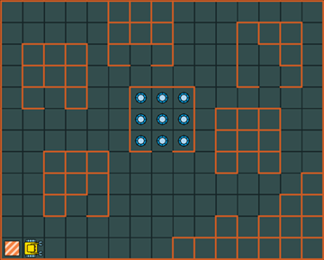
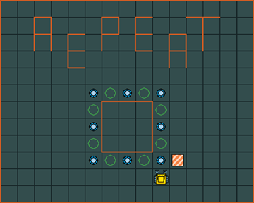
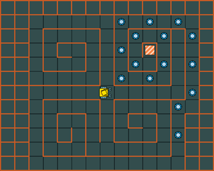

1. 赢得编程领域的黑带¶
学习Karel的最好方法就是通过Computing-works中的互动课程, 同时使用教科书作为参考. 这个课程有4个不同层次的教学指导——白带，黄带，紫带和黑带, 以确保所有学生兴奋和满足感的学习体验. 虽然白带和黄带设计为所有学生都可以顺利通过，但赢得黑带需要更高的意志力.
1.1 白带¶
每个学生将以8个热身项目开始他/她们的旅程, 以手工模式完成这些项目后将获得白带称号. 此阶段的示例项目“钻石矿” 如下图所示: Karel发现了一个废弃的钻石矿, 他的任务是在80秒内收集到所有9块宝石并返回他的家(左下角方块).

1.2 黄带¶
在获得白带之后, 学生们将被鼓励追求黄带. 这是此课程的核心, 为所有学生通过而设置. 为了获得黄带, 学生需要充分展示所有核心编程概念, 和编写简单计算机程序的能力. 下面的图片显示了本阶段项目“方架”, Karel需要把所有的宝石移入托盘, 然后返回他的家(右下角方块).

1.3 紫带¶
在紫带阶段, 学生将重温和加强他们之前学习过的概念, 并且将学习其他高级概念, 并且用他们解决高级编程项目. 下图所示迷宫对应本阶段的项目“法老的诅咒”. 这里, Keral站在金字塔中4条隧道的交口处, 面向任意一个方向——东、西、南或北. 他知道只有西边的隧道通向宝藏, 而其他方向的隧道隐藏着致命的陷阱. 由于他没有地图, 所以必须十分谨慎. 他需要到达隧道的尽头并且拾起沿途的所有宝石.

1.5 红黑带¶
没错, 这边确实有一个红带级别! 它为那些极具天赋的年轻编程者提供极其复杂和开放的问题. 如果你能够解决其中一个问题, 我们将为你在Computing-works Karel的名人堂中保留一席之地.